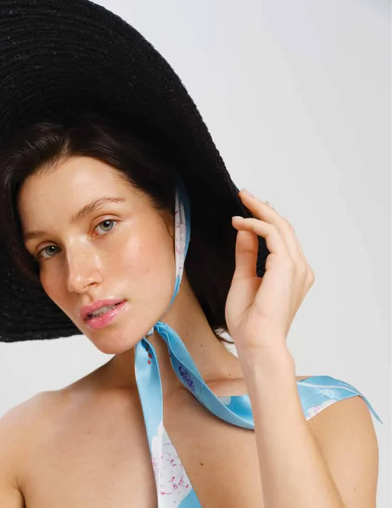
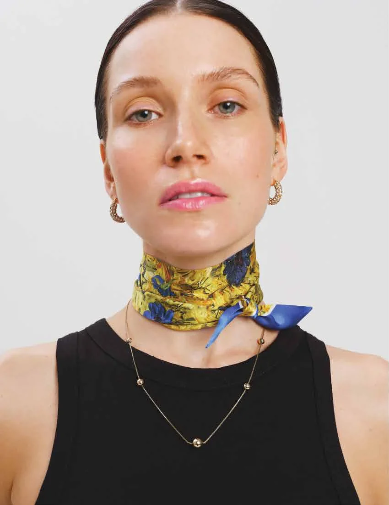
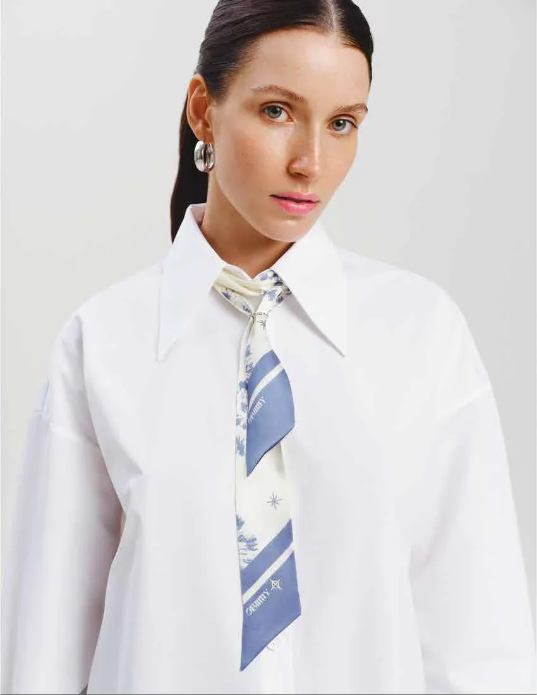
Чорна п’ятниця
Усі обличчя Чорної п’ятниці.
Хустки, твіллі, маски для сну й набори чотирьох колекцій — зі знижкою.
Знижки до −40 %
obiimy.world



Чорна п’ятниця
Усі обличчя Чорної п’ятниці.
Хустки, твіллі, маски для сну й набори чотирьох колекцій — зі знижкою.
Чорна п’ятниця
Чорне носять усі. Шовк — ви.
Твіллі «Сміливість» із «Поклику душі» — туго на шиї, на чорному топі.
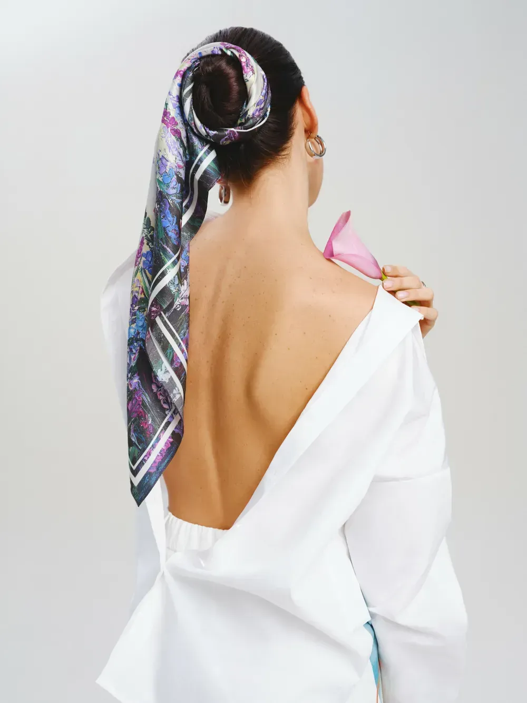
Чорна п’ятниця
Відкрита спина. Відкриті знижки.
Принт «Енергія» з «Поклику душі» — на спущеному плечі білої сорочки.
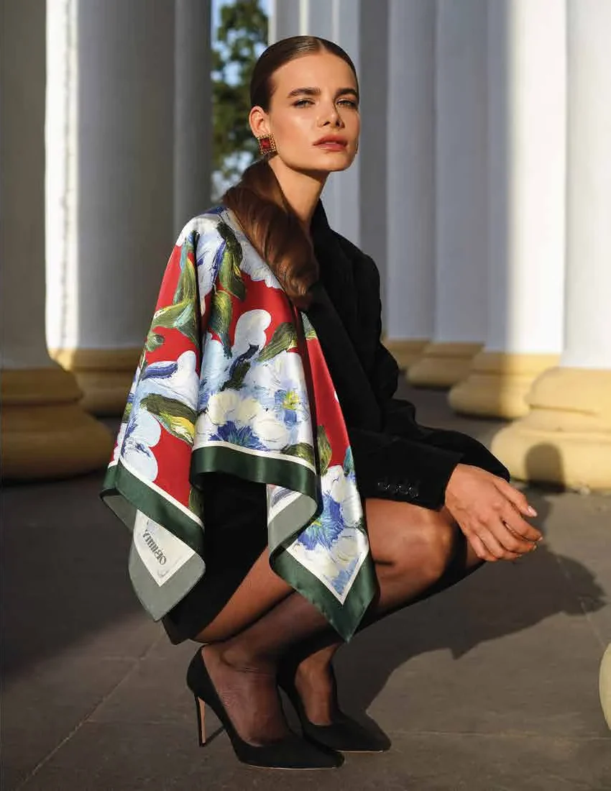
Чорна п’ятниця
Ціни присіли.
Хустка «Впевненість» із «Поклику душі». Хустки 44 · 65 · 88 см — зі знижкою.
Знижки на шовк
Вузлик на пам’ять: Чорна п’ятниця.
«Поцілунок сонця» з «Пробудження» — бантом на зап’ясті, на чорному жакеті.
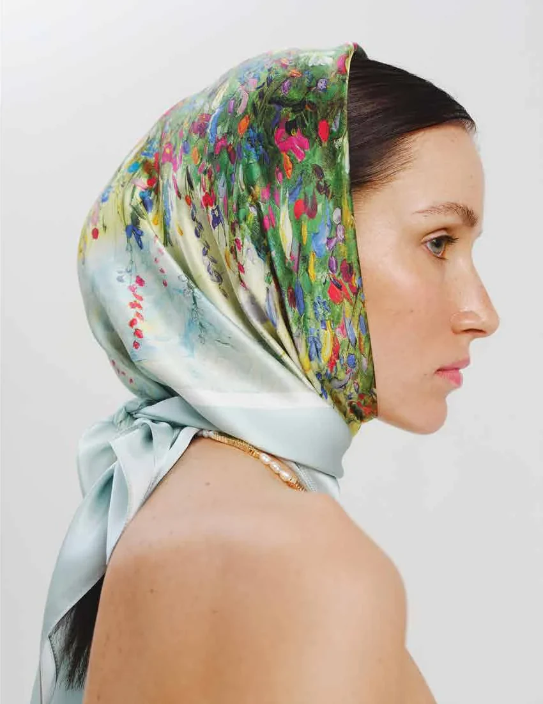
Чорна п’ятниця
Не втрачайте голову. Пов’яжіть її.
Хустка «Літнє поле» з «Поклику душі» — як косинка.
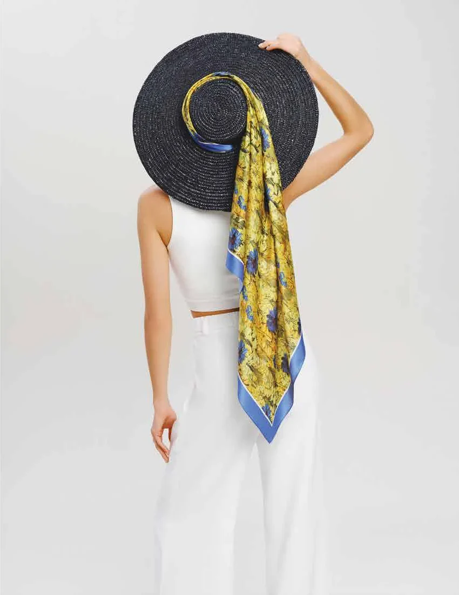
Чорна п’ятниця
Знімаємо капелюха. І ціни.
Хустка «Сміливість» із «Поклику душі» — на тулії чорного солом’яного капелюха.

Чорна п’ятниця
Дрес-код п’ятниці: шовк.
Твіллі «Пристрасть» із «Поклику душі» — як краватка під комір білої сорочки.
Чорна п’ятниця
В окулярах. Бо знижки сліпучі.
Хустка — як косинка, під підборіддя. Хустки 44 · 65 · 88 см зі знижкою.

Чорна п’ятниця
Заплетіть знижку в косу.
Набір «твіллі 84 × 5 + хустка 44 × 44» «Сміливий дотик» з «Дикої стихії» — твіллі вплетений у хвіст.
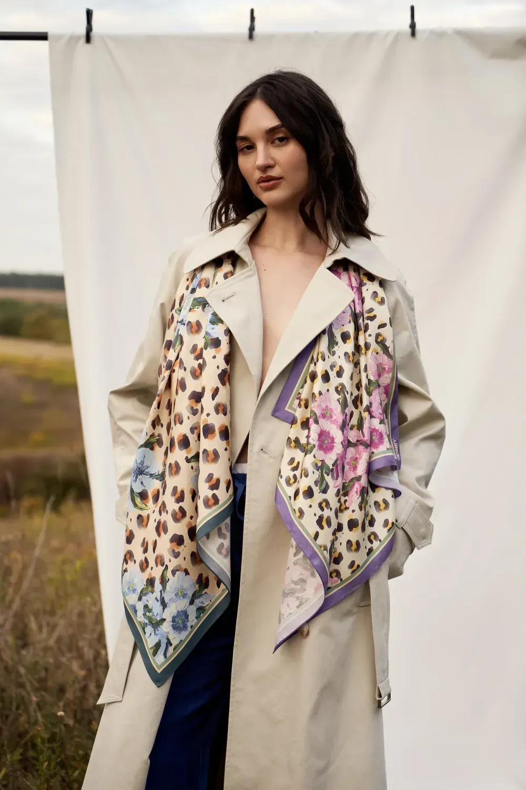
Чорна п’ятниця
Дві хустки. Одна п’ятниця.
«Сміливий дотик» і «Натхнення» з «Дикої стихії» — обидві на тренчі.
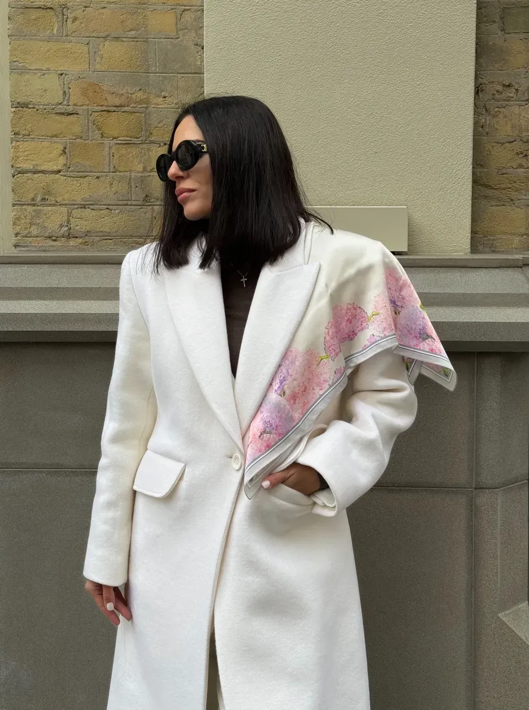
Знижки на шовк
Чорна п’ятниця. Ви — в білому.
Хустка «Між нами» з «Пробудження» — на плечі білого пальта.


Чорна п’ятниця
Три хвости. Одна п’ятниця.
Набори «твіллі 84 × 5 + хустка 44 × 44»: «Натхнення», «Пробудження», «Впевненість» — зі знижкою.
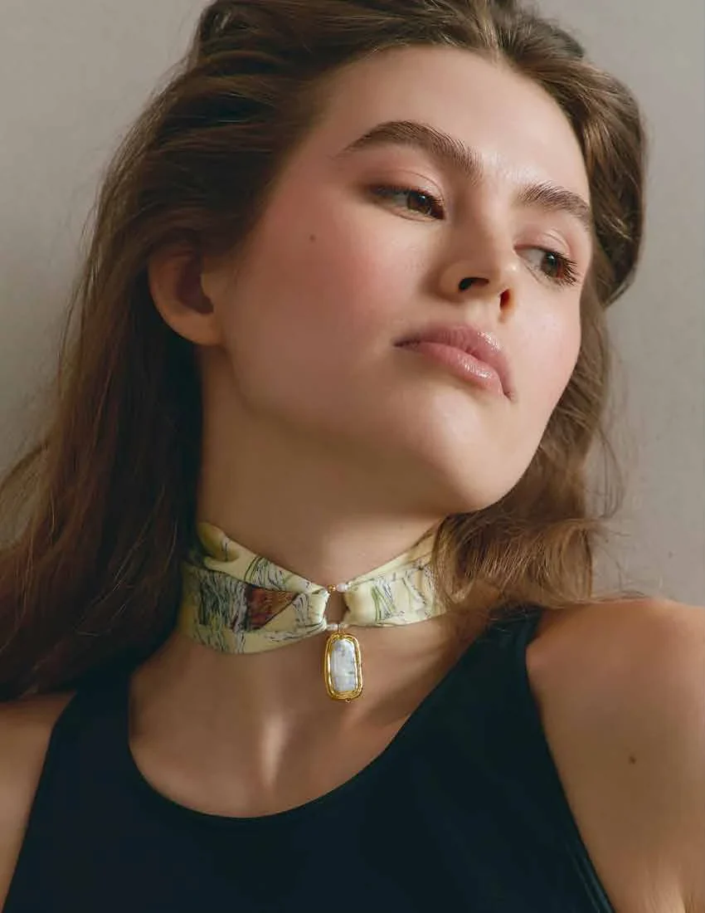
Чорна п’ятниця
Шовк на шиї. Знижка на шовк.
Твіллі «Тиша серця» зі «Співочої душі» — як чокер. Твіллі зі знижкою.
Чорна п’ятниця
Єдине чорне тут — капелюх.
Твіллі «Ніжність» із «Поклику душі» — під підборіддям, під чорним солом’яним капелюхом.
Знижки на шовк
Чорна п’ятниця з чистого листа.
Хустка «З чистого листа» з «Дикої стихії» — на шиї, у полі.
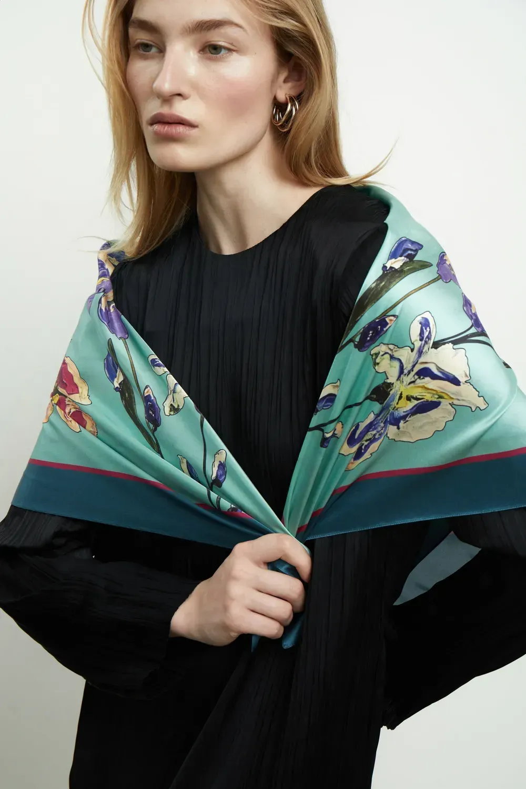
Чорна п’ятниця
У чорному — лише сукня.
Хустка «Пробудження» з однойменної колекції — на плечах, вузол у руці.